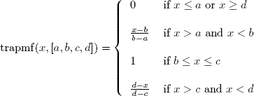

trapmf compute the trapezoidal member function of
x with parameters [a,b,c,d]. This member
function need a<b<=c<d.

Examples
x=linspace(0,1,100)';y1=trapmf(x,[00.20.40.6]);y2=trapmf(x,[0.20.50.60.9]);y3=trapmf(x,[0.50.60.80.9]);scf();clf();plot2d(x,[y1y2y3],leg="y1@y2@y3");xtitle("Trapezoidal Member Function Example","x","mu(x)");